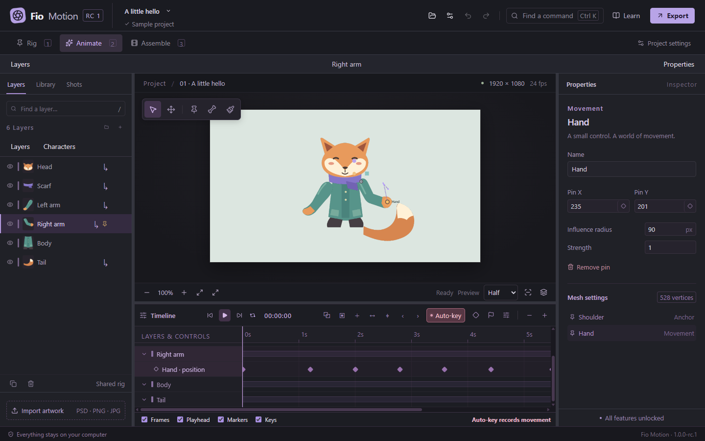
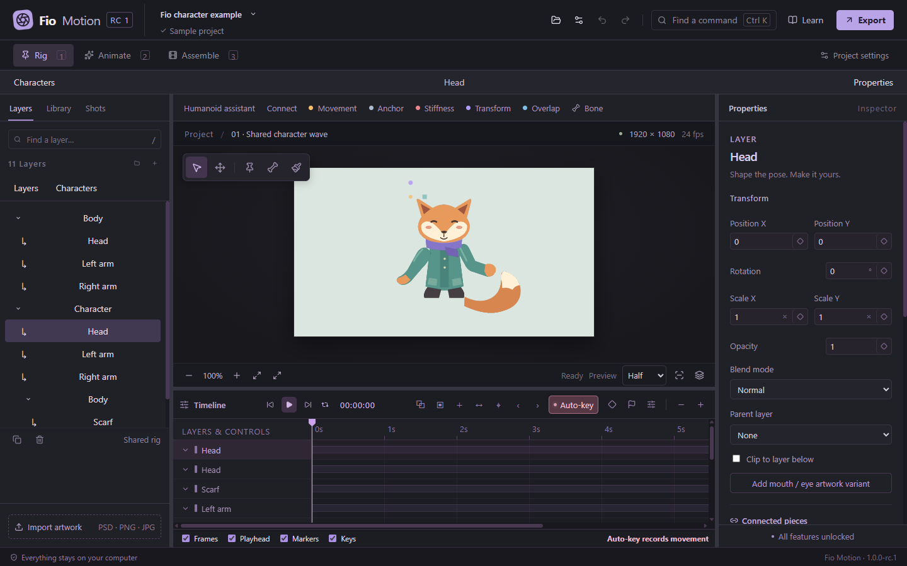
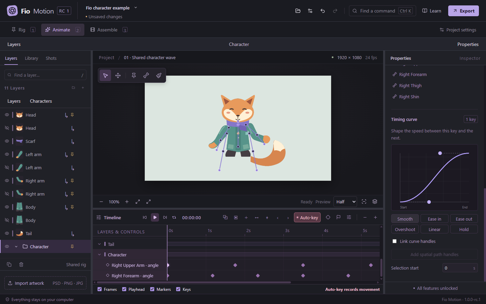
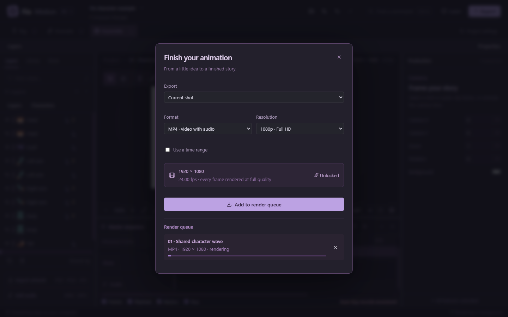

YOUR FIRST ANIMATION
A small wave.
A good beginning.
Start with the included fox, then try your own artwork. This guide takes you from separate pieces to a finished video.
Open the studio.
Download Fio Motion for Windows 11 x64. Use the installer, or run the portable executable. Check the download section for the current release status, signing information, release notes and checksums.
On the welcome screen, choose Learn with the example for a prepared pin animation. The support archive also includes Fio character.puppet, a shared-skeleton example. Keep its matching .assets folder beside the project when opening it.

Save a copy before experimenting. The example is there to be changed.
Give the character its pieces.
- Choose New project. Set the dimensions and frame rate; 1920×1080 at 24 fps is a useful starting point.
- Open Rig and choose Import artwork. Import transparent PNG pieces or a supported layered PSD.
- Name the pieces clearly: Body, Head, Left arm, Right arm and Tail. Keep movable parts on separate layers.
- Arrange the artwork on the canvas. The Layers tree controls drawing order; front pieces should sit above pieces behind them.
PNG, JPEG and WebP are supported. PSD import begins with 8-bit RGB documents and reports unsupported Photoshop features. Check PSD preparation and compatibility.
Make the parts follow each other.
For a simple character, select a piece in Rig, choose its destination in Connected pieces → Follow layer, and click Connect piece. A scarf can follow the body; the head can follow a layer, pin or bone. The visual Connect tool offers the same operation on the canvas.
For a biped, select the artwork and open the Humanoid assistant. Associate body parts, place the joints, test bending and apply. Whole limbs and segmented limbs are supported. Already-rigged or animated pieces require Work on a copy.


Connections preserve placement and drawing order. Rig edits do not create animation keyframes. Undo returns the project to its previous rig.
One pose, then another.
- In Rig, select the arm and add a movement pin near the hand. Add an anchor near the shoulder to keep it in place. Try dragging the hand to check the bend.
- Switch to Animate. Check that Auto-key is enabled. Select the hand pin directly on the canvas.
- At the first frame, set the starting hand pose and press K to add a keyframe if one does not exist.
- Move the playhead forward, drag the hand to its next pose, and let Auto-key record it. Add a few alternating poses for a wave.
- Press Space to play. Select and drag keyframes to change how long each movement takes.
In Animate, clicking a connected character selects the group. Double-click to work on a piece; press Escape to return to the character. Visible pins and bones can be selected directly.
A wave should feel like a wave.
Select a keyframe diamond and open Curve editor in the timeline toolbar. Choose Smooth for a gentle start and finish, or drag the Bézier handles to shape the acceleration yourself.


Timing curves change speed. Spatial path handles change the route. Copy keyframes with Ctrl+C, move the playhead and paste with Ctrl+V. Copying a pose uses separate Ctrl+Shift+C and Ctrl+Shift+V commands.
New movement keys use smooth easing by default. Use Linear or Hold deliberately when that is the motion you want.
Let the character leave the studio.
Use Assemble to arrange shots and import WAV or MP3 audio. When ready, click Export, choose the scene or production range, and select MP4 or a transparent PNG sequence. Add the job to the render queue and wait for completion.


MP4 is convenient for sharing. A transparent PNG sequence keeps the alpha channel for compositing elsewhere. All features, including higher-resolution export, are unlocked in the current candidate.
Save the .puppet project too. Keep its managed artwork and audio folders together, or use Collect project for a portable archive.
Get Fio Motion